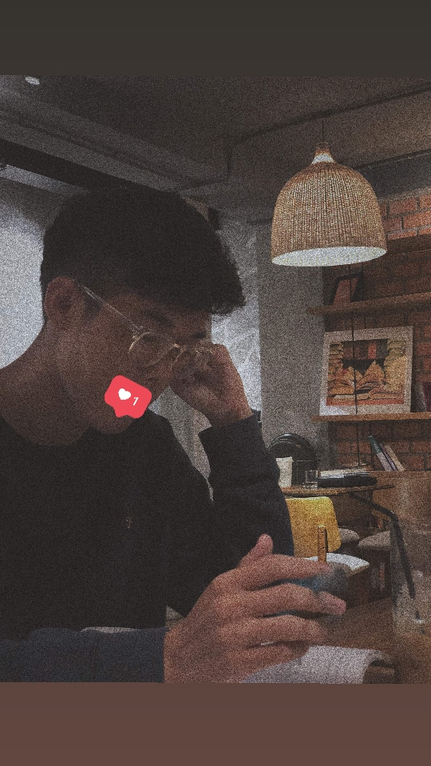

Honestly, I've been struggled alot until nowadays, I used to be looked as a loser just because I always be ranked worst in Secondary-school. I don't know why but with me, ranking was something rediculous and after days I just neglected these rumors over my ears until the day that I found a "real" teacher of my life. She encouraged, adviced and always supported me in need. And that time, I really had motivation to carry on my study-road.
Used to be an "Underdog Person"
Change never be difficult!

Out of expectation, nobody awaited the result, even my parents that I just graduated one of top 3 high-school in HCM city (Nguyen Thi Minh Khai highschool). At that time just one and only one person believe that I could do it was me teacher, and with me, at least one believe in me, I would do my all best. And after that time, parents and others has had a "real look" about me.
The most Weirdest Hobbies

If you were one of my friends, you would admit that I really have a strange specialty which is my studying. Maybe after the time that I changed, I gradually take the real compassion in studying somethings new, and have utilized most of my time in Studying at CoffeeShop. I really have passion in searching new and get my own knowledge, of course these kinds of knowledge not come from school, somethings that really opens my horizon about things. Espeically IT, I spent time in studying dispite of playing game as my peers, to one more time get into one of top 3 university in HCM city (HCMUS). And until the day, I really have my own life in my hand and can do things that I love.
"Your True Color"

At the end, I know that I never be a loser in everyone at all. Once still there is a person believe in me, I would never stop what I'm doing and just different with the past, the time that I always looked down myself as other's thinking. And now I know that I greater than what they expected to me ... Special thank to my greatest teacher and friends, who always have belief in me althrough I still be a loser ....
Thank you for spending time with my life-story, to back home just press in this tab!